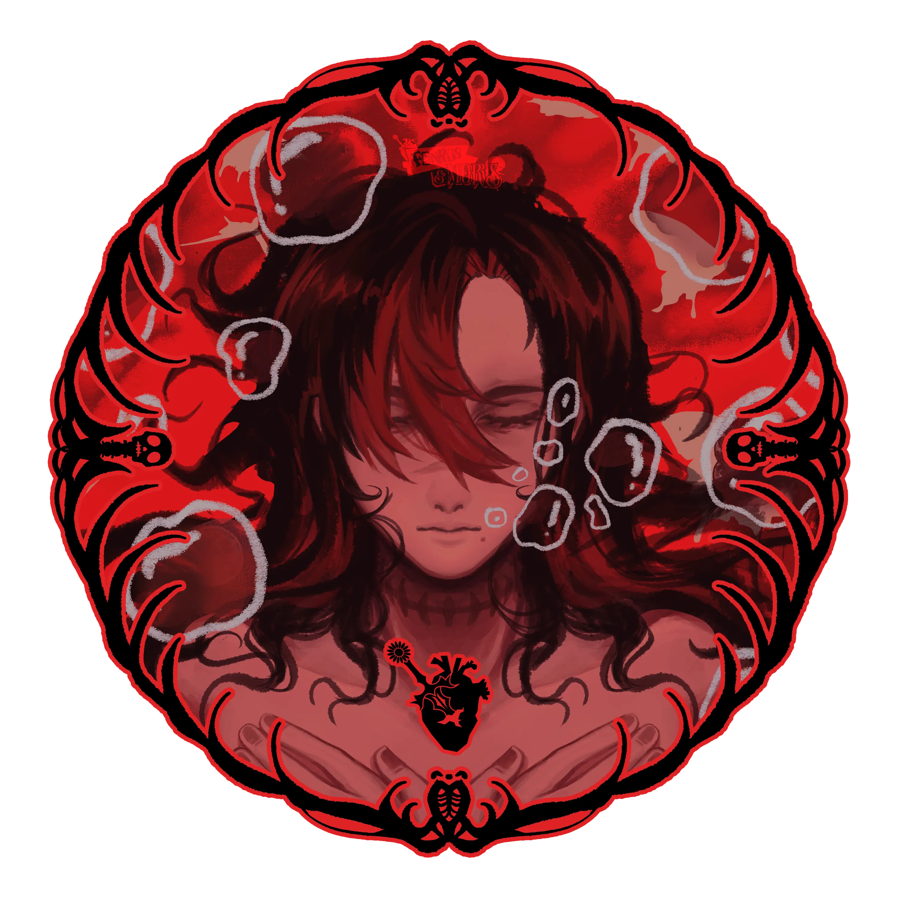
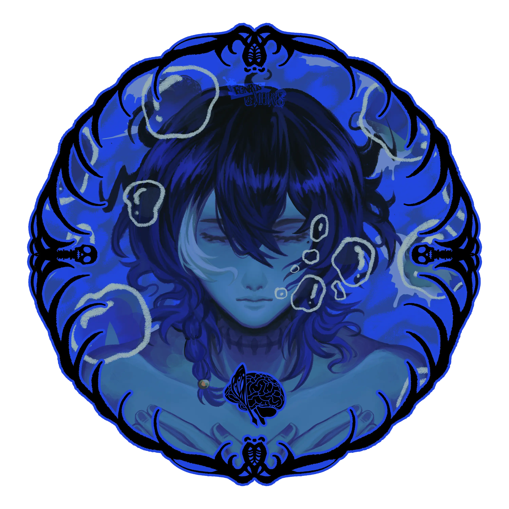

Exocorpse is where I put the intense parts of my character work: loyalty, survival, devotion, performance, body language, soft horror, and people trying to become something sharper than their pain.

Official ArtFight profile
Fenrys & Morris
haunted. devoted. cinematic.
Hey, I'm Fenrys & Morris, the artist and writer behind Exocorpse. I draw, write, make character work, and build story-heavy worlds with anatomy, psychology, terminal glow, and dramatic feelings at the center.

Prototype: Pulse
Action, combat, bold poses, teeth, hands, weapons, tactical outfits, stage lighting, and movement that says exactly what the character feels.
Prototype: Neuro
Symbols, coded imagery, memory motifs, dialogue fragments, eerie portraits, quiet dread, and character psychology.
Attack Me With
Anything with a pulse or a secret
dramatic entrances, aftermath, chase frames, or character tension
outfit experiments, silhouettes, surgical details, weapon motifs
hands, teeth, eye contact, pride, devotion, exhaustion
dialogue, poem fragments, faux interface notes, written annotations
Design Notes
Little things that make attacks feel personal
- Lean into asymmetry, expressive hands, and posture with intent.
- Pulse can be sharp, theatrical, forward, and physically loud.
- Neuro can be quiet, symbolic, coded, intimate, and unsettling.
- Outfit changes, AU details, and prop symbolism are very welcome.
- Written captions, UI labels, and fake notes are loved.


anatomy charts / terminal windows / rose surgical light / cyan monitor glow / hands and teeth / mirror poses / soft horror / uniform redesigns / devotion motifs / memory glitches / red string / written annotations
Gallery Wall
Art directions I love making

Illustration / Fanwork
Technoblade's 26th Birthday

Illustration / Fanwork
Drowning Love

Client Illustration
Musicvayle

Zinework
PSYNCRONIZE

Original / Merch
The Successor's Thrones

Original / Merch
Stasis Chamber

Illustration / Fanwork
At All Costs

Merch / Fanwork
Undertale's 10th Anniversary
mirrored composition, twin symbolism, red/cyan contrast
sharp expressions, motion, bright threat, confident posing
soft dread, symbols, memory, handwritten motifs
story-heavy choices and atmospheric experiments